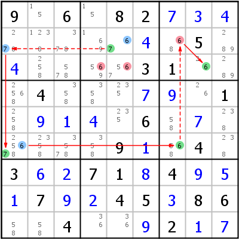

HoDoKu Lösungstechnik-Index: Beispiel für "Alternate Inference Chain Type 1 (cannibalistic)"

Originales Sudoku:
9.6.82..........5......31...4......1.....6.......9..4.3..71.4...7..45.86..4...2..
Verwenden Sie die folgende Zeile um das Sudoku in HoDoKu zu laden:
:0708:6:9.6.82+7+3+4.....+4.5.+4....31...4...+7+9.1.+9+1+4.6.+7.....9+1.4.3+6+271+84+9+5+17+9+245+386..4..+92+1+7::627 634 635:
Die folgende Darstellung kann per Zwischenablage in die meisten Sudoku-Programme eingefügt werden:
.-------------------.-------------.--------------. | 9 15 6 | 15 8 2 | 7 3 4 | | 278 1238 378 | 169 67 4 | 68 5 289 | | 4 258 578 | 569 567 3 | 1 26 289 | :-------------------+-------------+--------------: | 2568 4 358 | 358 235 7 | 9 26 1 | | 258 9 1 | 4 235 6 | 58 7 238 | | 25678 2358 3578 | 358 9 1 | 568 4 238 | :-------------------+-------------+--------------: | 3 6 2 | 7 1 8 | 4 9 5 | | 1 7 9 | 2 4 5 | 3 8 6 | | 58 58 4 | 36 36 9 | 2 1 7 | '-------------------'-------------'--------------'
Darstellung des Lösungsschrittes:
.--------------------.----------------.----------------. | 9 15 6 | 15 8 2 | 7 3 4 | | *278 1238 378 | 169 *67 4 | *-68 5 289 | | 4 258 578 | 5-69 5-67 3 | 1 *26 289 | :--------------------+----------------+----------------: | 2568 4 358 | 358 235 7 | 9 26 1 | | 258 9 1 | 4 235 6 | 58 7 238 | | *25678 2358 3578 | 358 9 1 | *568 4 238 | :--------------------+----------------+----------------: | 3 6 2 | 7 1 8 | 4 9 5 | | 1 7 9 | 2 4 5 | 3 8 6 | | 58 58 4 | 36 36 9 | 2 1 7 | '--------------------'----------------'----------------' AIC 6- r2c5 -7- r2c1 =7= r6c1 =6= r6c7 -6- r2c7 =6= r3c8 -6 => r2c7,r3c45<>6
Copyright © 2008-12 von Bernhard Hobiger
Zuletzt geändert am 5. Mai 2025 von shorty#3746
(basierend auf dem 1to9only Github-Repo)
Alles Material auf dieser Site unterliegt der GNU FDLv1.3.